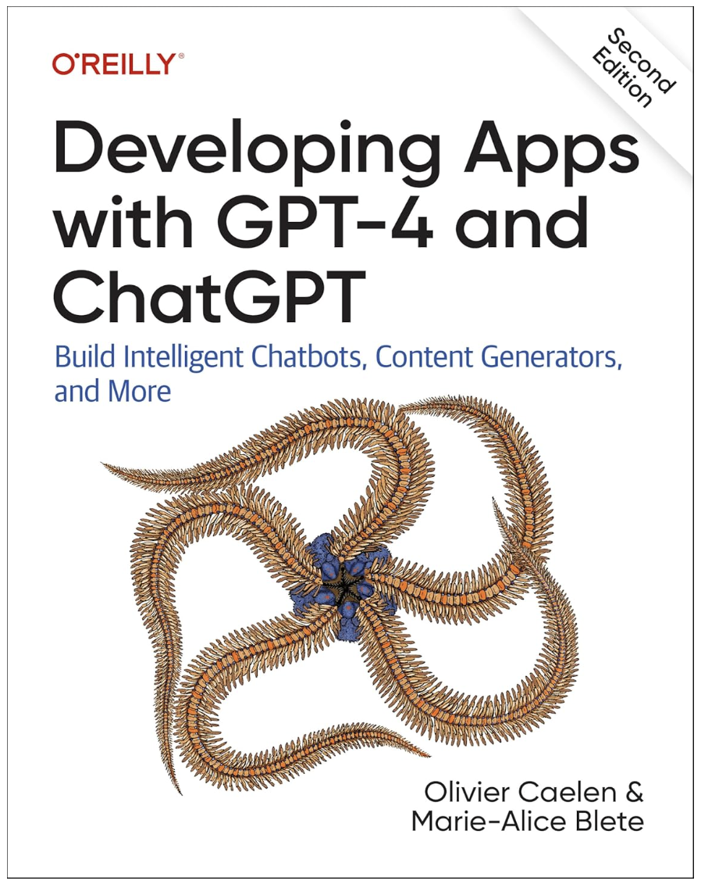

Statistics and Machine Learning
Olivier Caelen
Associate Professor in Statistics and Machine Learning
UCLouvain | ISBA | LIDAM
I am an Associate Professor in Statistics and Machine Learning at UCLouvain, within the Institute of Statistics, Biostatistics and Actuarial Sciences (ISBA) and the Louvain Institute of Data Analysis and Modeling in economics and statistics (LIDAM). My work combines academic research with more than 15 years of applied artificial intelligence experience in industry.
Research Interests
My research centers on statistical machine learning methods that remain reliable under uncertainty, distribution shift, and operational constraints. Current themes include:
- Model calibration and uncertainty quantification
- Causal inference and causal discovery
- Fairness in statistical learning
- Anomaly detection in high-dimensional data
- Deep neural networks
Publications
Scientific Publications
- Paldino GM., , Oueslati M., Ansay M., Johanesa TVA, Bontempi G. On the integration of Domain Adaptation and Causal Discovery in Digital Twins: A Case Study for Plastic Injection Molding. Future Generation Computer Systems, 2026.
- Paldino GM., , Oueslati M., Ansay M., Johanesa TVA, Bontempi G. Integrating Domain Adaptation and Causal Discovery in Digital Twins for Plastic Injection Molding. IEEE International Conference on Pervasive Computing and Communications, 2025.
- Dastidar K.G., , Granitzer M. Machine Learning Methods for Credit Card Fraud Detection: A Survey. IEEE Access, 2024.
- Guilbert T., , Chirita A., Saerens M. Calibration Methods in Imbalanced Binary Classification. Annals of Mathematics and Artificial Intelligence, 2024.
- Lunghi D., Paldino G.M., , Bontempi G. An adversary model of fraudsters' behaviour to improve oversampling in credit card fraud detection. IEEE Access, 2023.
- Lunghi D., Simitsis A., , Bontempi G. Adversarial Learning in Real-World Fraud Detection: Challenges and Perspectives. ACM DataEconomy Workshop, 2023.
- Carcillo F., Le Borgne Y.A., , Kessaci Y., Oblé F., Bontempi G. Combining Unsupervised and Supervised Learning in Credit Card Fraud Detection. Information Sciences, 2021.
- Verhelst T., , Dewitte J.C., Lebichot B., Bontempi G. Understanding telecom customer churn with machine learning: from prediction to causal inference. Benelearn, 2020.
- Lucas Y., Portier P.E., Laporte L., He-Guelton L., , Granitzer M., Calabretto S. Towards automated feature engineering for credit card fraud detection using multi-perspective HMMs. Future Generation Computer Systems, 2020.
- Gianini G., Fossi L.G., Mio C., , Brunie L., Damiani E. Managing a pool of rules for credit card fraud detection by a Game Theory based approach. Future Generation Computer Systems, 2020.
- De Stefani J., Le Borgne Y.A., , Hattab D., Bontempi G. Batch and incremental dynamic factor machine learning for multivariate and multi-step-ahead forecasting. International Journal of Data Science and Analytics, 2019.
- Lucas Y., Portier P.E., Laporte L., Calabretto S., , He-Guelton L., Granitzer M. Multiple perspectives HMM-based feature engineering for credit card fraud detection. 34th ACM/SIGAPP Symposium on Applied Computing, 2019.
- Frery J., Habrard A., Sebban M., , He-Guelton L. Online Non-linear Gradient Boosting in Multi-latent Spaces. International Symposium on Intelligent Data Analysis, 2018.
- De Stefani J., , Hattab D., Le Borgne Y.A., Bontempi G. A Multivariate and Multi-step Ahead Machine Learning Approach to Traditional and Cryptocurrencies Volatility Forecasting. ECML PKDD, 2018.
- Carcillo F., Le Borgne Y.A., , Bontempi G. Streaming active learning strategies for real-life credit card fraud detection: assessment and visualization. International Journal of Data Science and Analytics, 2018.
- Jurgovsky J., Granitzer M., Ziegler K., Calabretto S., Portier P.-E., He-Guelton L., Sequence classification for credit-card fraud detection. Expert Systems with Applications, 2018.
- Russac Y., , He-Guelton L. Embeddings of Categorical Variables for Sequential Data in Fraud Context. International Conference on Advanced Machine Learning Technologies and Applications, 2018.
- Dal Pozzolo A., Boracchi G., , Alippi C., Bontempi G. Credit Card Fraud Detection: a Realistic Modeling and a Novel Learning Strategy. IEEE Transactions on Neural Networks and Learning Systems, 2018.
- Carcillo F., Dal Pozzolo A., Le Borgne Y.A., , Mazzer Y., Bontempi G. SCARFF: a Scalable Framework for Streaming Credit Card Fraud Detection. Information Fusion, 2017.
- A Bayesian Interpretation of the Confusion Matrix. Annals of Mathematics and Artificial Intelligence, 2017.
- Carcillo F., Le Borgne Y.-A., , Bontempi G. An Assessment of Streaming Active Learning Strategies for Real-Life Credit Card Fraud Detection. 4th IEEE International Conference on Data Science and Advanced Analytics, 2017.
- De Stefani J., , Hattab D., Bontempi G. Machine Learning for Multi-step Ahead Forecasting of Volatility Proxies. 2nd Workshop on Mining Data for Financial Applications, 2017.
- Fréry J., Habrard A., Sebban M., , He-Guelton L. Efficient top rank optimization with gradient boosting for supervised anomaly detection. European Conference on Machine Learning and Principles and Practice of Knowledge Discovery, 2017.
- Ziegler K., , Garchery M., Granitzer M., He-Guelton L., Jurgovsky J., Portier P.E., Zwicklbauer S. Injecting Semantic Background Knowledge into Neural Networks using Graph Embeddings. 26th IEEE International Conference on Enabling Technologies: Infrastructure for Collaborative Enterprises, 2017.
- Braun F., , Smirnov E.N., Kelk S., Lebichot B. Improving card fraud detection through suspicious pattern discovery. 30th International Conference on Industrial, Engineering, Other Applications of Applied Intelligent Systems, 2017.
- De Stefani J., Bontempi G., , Hattab D. Multi-step-ahead prediction of volatility proxies. Benelearn, 2017.
- Lebichot B., Braun F., , Saerens M. A graph-based, semi-supervised, credit card fraud detection system. 5th International Workshop on Complex Networks and their Applications, 2016.
- Dal Pozzolo A., , Johnson R., Bontempi G. Calibrating Probability with Undersampling for Unbalanced Classification. IEEE Symposium Series on Computational Intelligence, 2015.
- Dal Pozzolo A., , Bontempi G. When is undersampling effective in unbalanced classification tasks? European Conference on Machine Learning, 2015.
- Dal Pozzolo A., Boracchi G., , Alippi C., Bontempi G. Credit Card Fraud Detection and Concept-Drift Adaptation with Delayed Supervised Information. IEEE International Joint Conference on Neural Networks, 2015.
- Van Vlasselaer V., Bravo C., , Eliassi-Rad T., Akoglu L., Snoeck M., Baesens B. APATE: A novel approach for automated credit card transaction fraud detection using network-based extensions. Decision Support Systems, 2015.
- Dal Pozzolo A., Johnson R., , Waterschoot S., Chawla N.V., Bontempi G. Using HDDT to avoid instances propagation in unbalanced and evolving data streams. IEEE International Joint Conference on Neural Networks, 2014.
- Dal Pozzolo A., , Le Borgne Y.-A., Waterschoot S., Bontempi G. Learned lessons in credit card fraud detection from a practitioner perspective. Expert Systems with Applications, 2014.
- Dal Pozzolo A., , Waterschoot S., Bontempi G. Racing for unbalanced methods selection. International Conference on Intelligent Data Engineering and Automated Learning, 2013.
- , Cailloux O., Ghoundiwal D., Miranda A.A., Barvais L., Bontempi G. Real-time prediction of an anesthetic monitor index using machine learning. ECML PKDD Workshop on Knowledge Discovery in Health Care and Medicine, 2011.
- Bontempi G., A Selecting-the-Best Method for Budgeted Model Selection. ECML PKDD, 2011.
- Leignel C., , Debeir O., Hanson E., Leloup T., Simler C., Beumier C., Bontempi G., Warzée N., Wolff E. Detecting man-made structure changes to assist geographic data producers in planning their update strategy. Core Spatial Databases Updating, Maintenance and Services from Theory to Practice, 2010.
- , Bontempi G. A dynamic programming strategy to balance exploration and exploitation in the bandit problem. Annals of Mathematics and Artificial Intelligence, 2010.
- Miranda A., , Bontempi G. Machine Learning for Automated Polyp Detection in Computed Tomography Colonography. Biomedical Image Analysis and Machine Learning Technologies: Applications and Techniques, 2009.
- , Bontempi G. Improving the exploration strategy in bandit algorithms. Learning and Intelligent Optimization, 2007.
- , Bontempi G., Barvais L. Machine learning techniques for decision support in anesthesia. 11th Conference on Artificial Intelligence in Medicine, 2007.
- , Bontempi G., Coussaert E., Barvais L., Clément F. Machine learning techniques to enable closed-loop control in anesthesia. 19th IEEE International Symposium on Computer-Based Medical Systems, 2006.
- Bejjani G., , Bontempi G., Perrin L., Barvais L. Retrospective comparison of manual versus semi-automated propofol-remifentanil TCI Anaesthesia. 9th Eurosiva Meeting, 2006.
- , Bontempi G., Clément F., Coussaert E., Barvais L. Simulation assessment of a closed-loop controller designed by machine learning techniques. 9th Eurosiva Meeting, 2006.
- , Bontempi G. How to allocate a restricted budget of leave-one-out assessments for effective model selection in machine learning: a comparison of state-of-the-art techniques. 17th Belgian-Dutch Conference on Artificial Intelligence, 2005.
- Meyer P.E., , Bontempi G. Speeding up Feature Selection by Using an Information Theoretic Bound. 17th Belgian-Dutch Conference on Artificial Intelligence, 2005.
- Bontempi G., , Pierret S., Goffaux C. On the use of supervised learning techniques to speed up the design of aeronautics components. WSEAS Transactions on Systems, 2005.
Book
Olivier Caelen and Marie-Alice Blete. Developing Apps with GPT-4 and ChatGPT, 2nd edition. O'Reilly Media, October 2024. ISBN 9781098152482.
